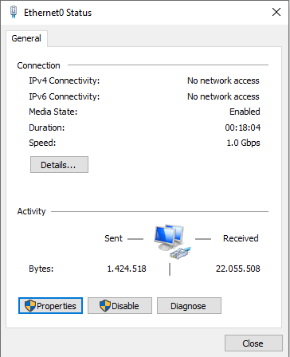
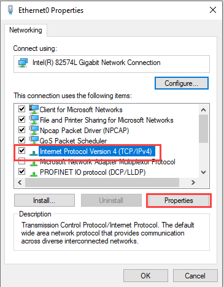
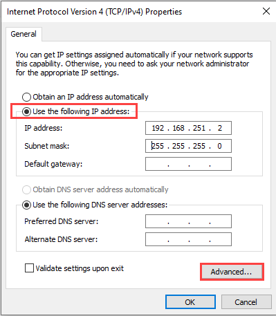
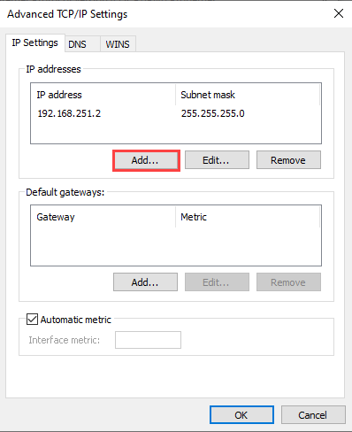
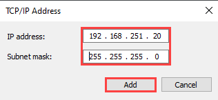

配置网络连接
调试笔记本电脑需要 IP 网络中唯一的 IP 地址。
此外，调试笔记本电脑和 IP 设备（房间自动化站、路由器等）必须位于 ABT 站点的同一子网中，才能使用 UDP 多播检测设备。例如：
192.168.251.10, Subnet mask 255.255.255.0
192.168.251.20, Subnet mask 255.255.255.0
调试笔记本电脑的网络连接必须进行相应配置。 DHCP 服务器自动分配 IP 地址不能满足此要求。

带有子网掩码的现有 IP 地址是已配置 IP 设备的关键。
对于未配置的 IP 设备，要配置的带子网掩码（目标地址）的 IP 地址是关键。这可确保所有设备在配置后都位于同一子网中。
在 ABT 站点中，可以直接通过以下方式查询网络连接设置：Connect公共工具栏中的按钮。
这些设置可以通过Network and Sharing Center在 Windows 10 操作系统中。
Configure the commissioning laptop network connection
- The IP address with subnet mask is known for the commissioning laptop (ask your project manager).
- Select Start > Settings > Status > Network and Sharing Center > Change adapter settings > Local Area Connection 2.
- The Local Area Connection 2 Status dialog box displays.
- Click Properties.

- Select Internet Protocol Version 4 (TCP/IPv4).
Click Properties.
- Select Use the following IP address.
Click Advanced.
- Click Add.

- Enter the IP address (IP address range for Desigo Room Automation).
Enter the Subnet mask (for example, 255.255.255.0).
Click Add.
- Confirm by clicking OK and close the dialog box.
- Continue clicking OK until all the dialog boxes are closed.
- Another fixed IP address is assigned.